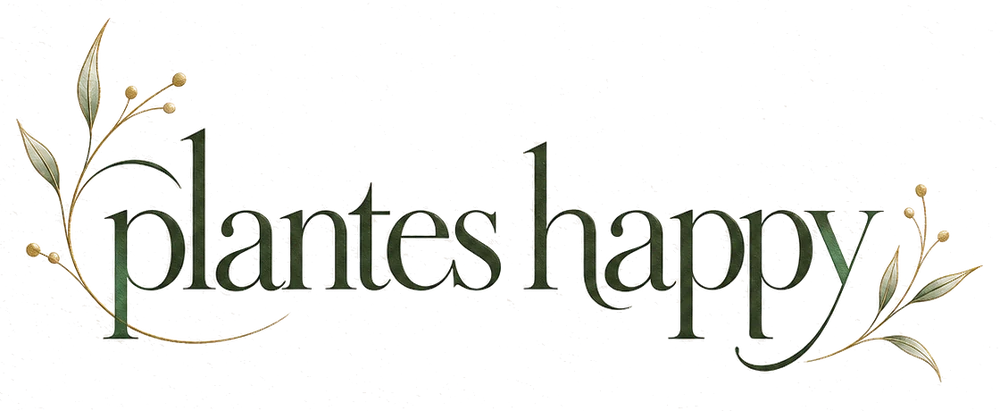
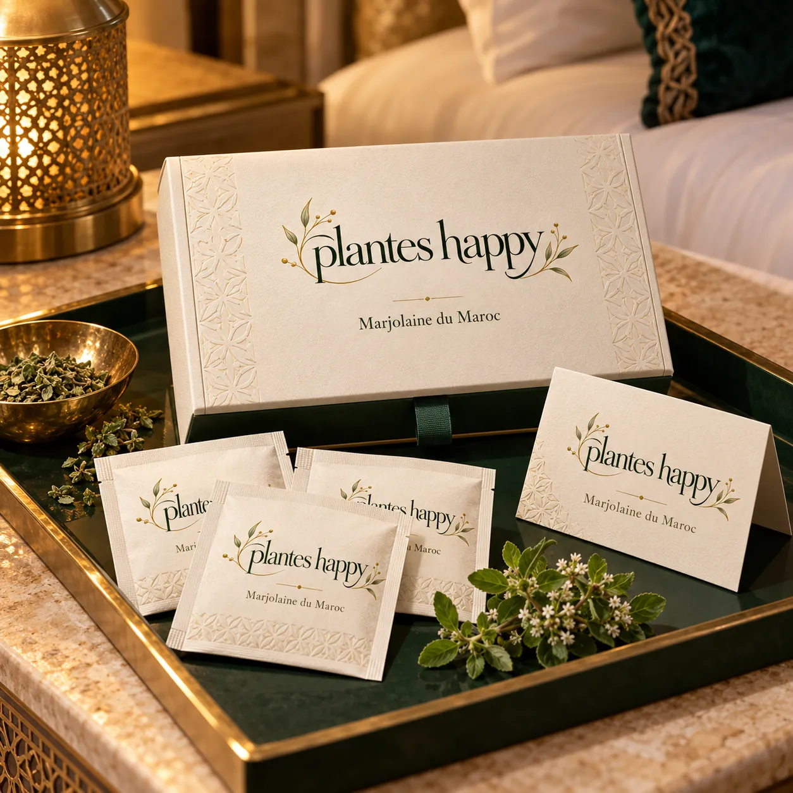
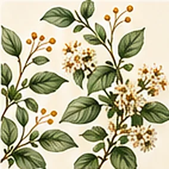
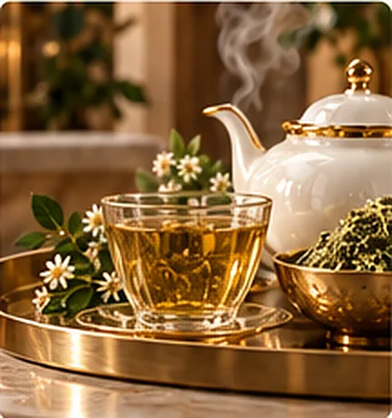
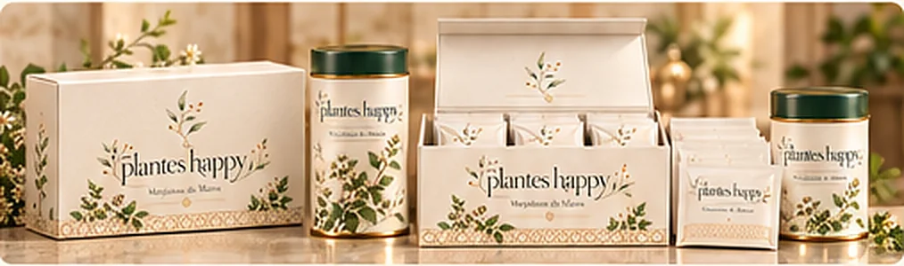
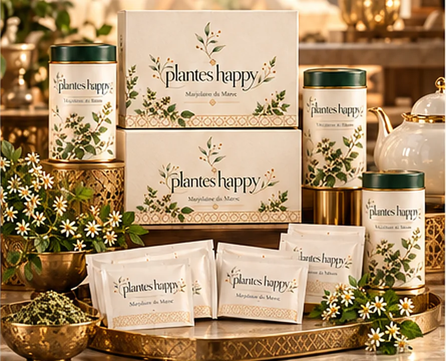
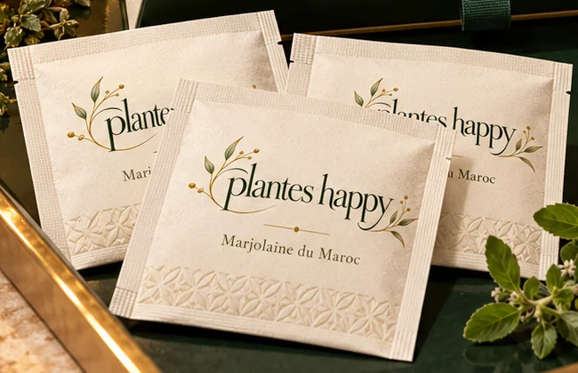
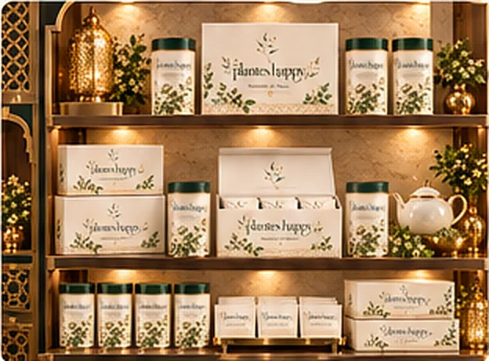
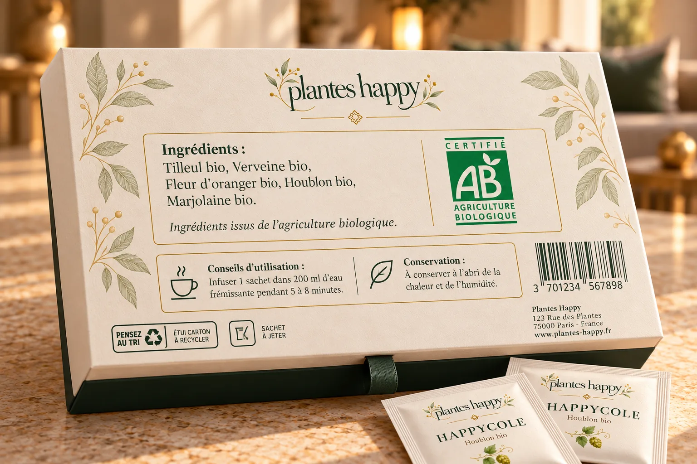

Un sachet
Déposez un sachet dans votre tasse. Le papier est fin, l'infusion est généreuse.

Marjolaine du Maroc
Le rituel botanique du Maroc

Sous le soleil du Maroc, la marjolaine déploie un parfum chaud, herbacé, à peine boisé. Chez Plantes Happy, cette plante devient un rituel simple : une tasse, quelques minutes, un moment à soi. Rien de plus, rien de moins.
Origanum majorana Plante aromatique de la famille des lamiacées. Arôme chaud, herbacé, légèrement boisé.


5 à 8 minutes
Déposez un sachet dans votre tasse. Le papier est fin, l'infusion est généreuse.
Versez l'eau doucement, sans la laisser bouillir à gros bouillons, pour préserver les arômes de la plante.
Laissez infuser, retirez le sachet, puis savourez. Plus l'infusion est longue, plus le goût est profond.
De l'étui rigide au sachet individuel, chaque format garde le même soin : papier de coton ivoire, vert forêt, or champagne.
Un écrin ivoire aux motifs marocains en relief, fermé d'un ruban vert forêt.

Le format du quotidien : vingt infusions rangées, prêtes à partager.

Une boîte à couvercle vert forêt, qui trouve sa place sur toutes les étagères.

Pour une chambre d'hôtel, un cadeau glissé dans une carte, une pause en voyage.
Un rituel d'accueil raffiné, inspiré par la nature marocaine. L'art du thé en hôtellerie devient une expérience sensorielle, unique et mémorable.

Tout ce qu'il faut savoir est écrit au dos de la boîte. Touchez les repères pour les découvrir.

Tous les ingrédients sont issus de l'agriculture biologique. La composition complète figure sur chaque boîte.
Vous dirigez un hôtel, une boutique, ou vous cherchez un cadeau d'exception ? Écrivez-nous, nous vous répondons avec plaisir.
Plantes HappyFélicitations du jury.